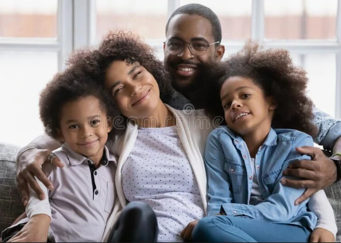

Target Audience
The target audience for this Chamber of Commerce website is the local businesses who might join the Chamber, and the citizens of the City of Syracuse who want to know about the local businesses and local events.
Personas
Persona 1
- Name: Jane
- Job: Owns a restaurant.
- Demographic: 30 years old | Married for 5 years | No kids yet but maybe after her restaurant takes off | Self-Taught Chef
- Background: Jane has been married to her husband Marcos for the past 5 years. They do not have kids yet but maybe after her restaurant becomes successful. Jane has lived in the area for a few years and her restaurant hasn't been as popular as she would like because she is not great at marketing.
- Goal: Jane wants to find other local business owners and collaborate with them so she can find inspiration about how to improve her business and marketing.
Persona 2
-

- Name: John
- Job: Accountant
- Demographic: 45 years old | Married with 2 kids | Great with numbers but not great with decision making
- Background: John and Marie have been married for the past 15 years. They have 2 kids: 10 year old Tina & and 8 year old Gene. They recently moved to the area and are looking forward to meeting everyone, but they need a lot of time to adjust to new things and figure things out.
- Goal: John is new to the area and there are so many businesses in the area that he does not know where to start with shopping, restaurants, entertainment, home repairs, etc. He is a people-person so he wants to talk to someone local who knows which businesses are good and which are not.
Scenarios
- Jane wants a way to easily find a list of the other local businesses and then have the ability to contact the members of the Chamber.
- John also wants to easily find a list of local businesses but he also wants to read a brief overview of what each business offers, their price range, and businesses that are similar to one another.
- Jane wants to stay up to date on what business-oriented events are happening.
- Jane wants to find out more information about the Chamber as a whole, and the benefits she would gain by joining. This would help her decide if she wants to join the Chamber or not
- John wants to find the contact information of someone who he can personally talk to about the businesses and events in the area.